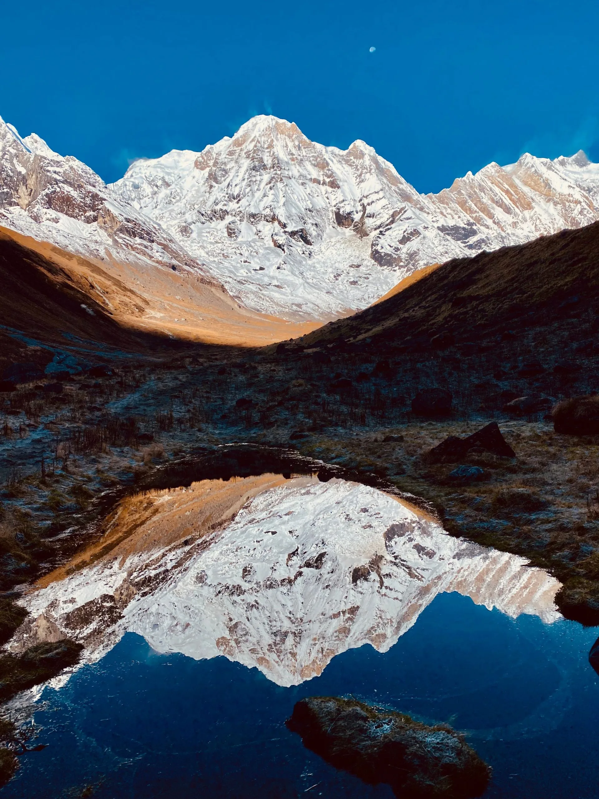
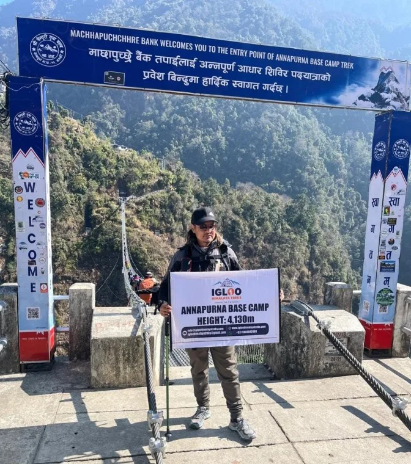
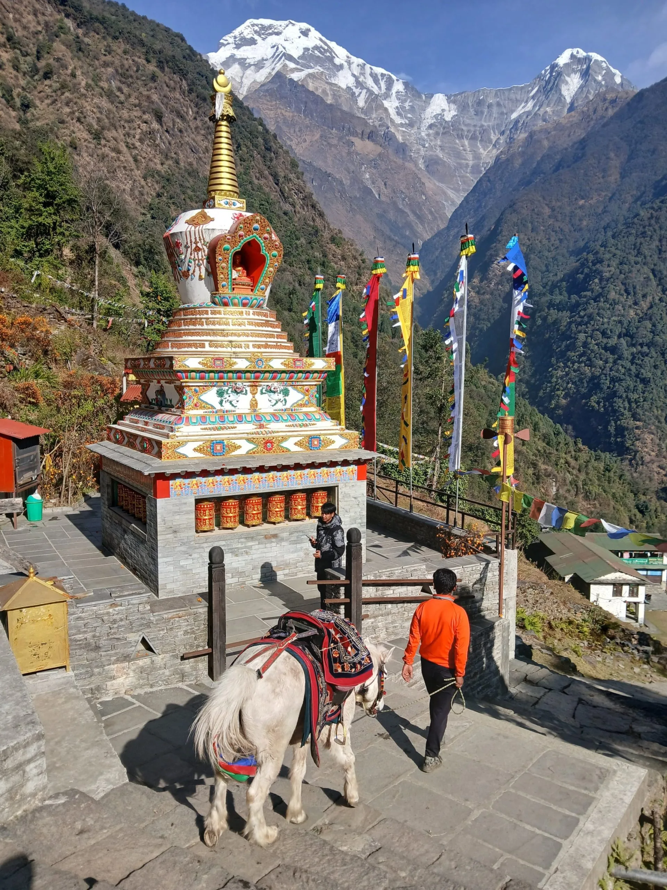
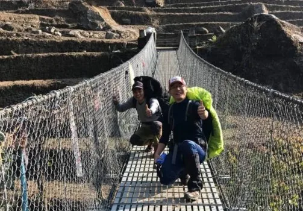
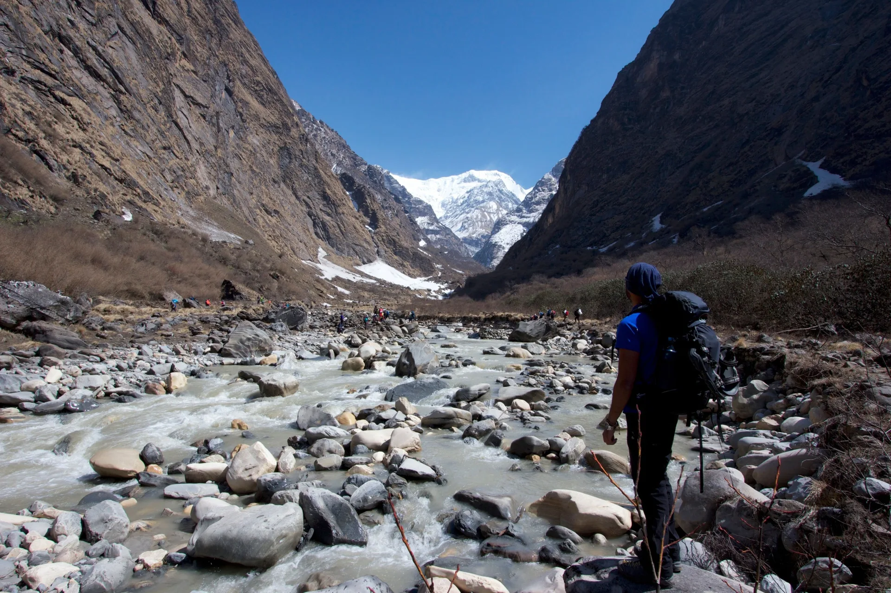

1. The Perfect 9-Day Annapurna Base Camp Itinerary: Pokhara to Sanctuary Architecture
Trekking to Annapurna Base Camp has historically taken anywhere from 10 to 14 days when including side loops to Ghorepani Poon Hill. However, recent expansions of modern jeep tracks to trailheads like Siwai, Matque, and Ghandruk now make the 9-day direct itinerary (7 days of trekking + 2 travel days) the most time-efficient and popular schedule for travelers with two-week vacation windows.
Unlike high-altitude circuit treks that require 2 to 3 weeks, the 9-day ABC route delivers rapid access to high alpine majesty. In under a week of trekking, you transition from subtropical lemon and rice terraces at 1,000 meters to raw glaciated moraines above 4,000 meters, surrounded by a dozen Himalayan peaks over 7,000 meters.

Key Route Highlights:
- Total Distance: Approximately 72 kilometers (44.7 miles) round-trip from the trailhead.
- Maximum Altitude: 4,130 meters (13,550 ft) at Annapurna Base Camp.
- Twin Base Camps: Visit both Machapuchare Base Camp (MBC, 3,700 m) and Annapurna Base Camp (ABC, 4,130 m).
- Natural Hot Springs: Relax your tired muscles in the geothermal pools of Jhinu Danda on the descent.
- Cultural Immersion: Stay in stone-built Gurung lodges in Ghandruk and Chhomrong.
2. Complete Day-by-Day Itinerary: Distances, Elevations & Trail Milestones
Below is our precisely timed 9-day schedule designed for optimal acclimatization, reasonable daily hiking hours, and peak photographic lighting:
| Day | Route Segment | Distance | Hiking Hours | Altitude (Start → End) |
|---|---|---|---|---|
| Day 01 | Drive Pokhara to Siwai / Matque; Trek to Chhomrong | 9.5 km | 4.5 – 5.5 hrs | 820 m → 1,400 m → 2,170 m |
| Day 02 | Chhomrong to Dovan via Bamboo | 10.8 km | 5.5 – 6.5 hrs | 2,170 m → 1,900 m → 2,600 m |
| Day 03 | Dovan to Deurali via Himalayan Hotel | 7.8 km | 4.0 – 5.0 hrs | 2,600 m → 3,200 m |
| Day 04 | Deurali to Annapurna Base Camp (ABC) via MBC | 8.5 km | 5.0 – 6.0 hrs | 3,200 m → 3,700 m → 4,130 m |
| Day 05 | Sunrise at ABC; Trek descend to Bamboo | 15.2 km | 6.0 – 7.0 hrs | 4,130 m → 2,310 m |
| Day 06 | Bamboo to Jhinu Danda (Natural Hot Springs) | 9.2 km | 4.5 – 5.5 hrs | 2,310 m → 2,170 m → 1,780 m |
| Day 07 | Jhinu Danda to Siwai; Drive private 4WD to Pokhara | 4.5 km | 2.0 – 2.5 hrs | 1,780 m → 1,400 m → 820 m |
| Day 08 | Leisure & sightseeing day in Pokhara (Phewa Lake, World Peace Pagoda) | Rest Day | — | 820 m |
| Day 09 | Drive tourist coach / fly Pokhara to Kathmandu | Transport | 25 min flight / 6 hr drive | 820 m → 1,400 m |

3. Elevation Profile: From Subtropical Lowlands (820 m) to the Glacial Sanctuary (4,130 m)
The elevation profile of the Annapurna Base Camp trek is one of the most dynamic in the Himalayas. In the span of four days, you travel through four distinct ecological zones:
| Ecological Zone | Altitude Range | Characteristic Vegetation | Typical Temperature |
|---|---|---|---|
| Subtropical Valley | 1,000 m – 2,000 m | Rice terraces, banana trees, bamboo groves | 18°C to 28°C (Warm & humid) |
| Temperate Cloud Forest | 2,000 m – 3,000 m | Dense mossy rhododendron, oak, bamboo | 10°C to 18°C (Pleasant) |
| Sub-Alpine River Gorge | 3,000 m – 3,800 m | Dwarf birch, juniper, sheer canyon walls | 4°C to 12°C (Brisk days) |
| Alpine Sanctuary | 3,800 m – 4,130 m | Glacial moraines, alpine scrub, permanent ice | -8°C to 8°C (Sub-zero nights) |
Because the maximum sleeping altitude is 4,130 meters (more than 1,000 meters lower than Everest Base Camp or Thorong La Pass on the Annapurna Circuit), the incidence of severe altitude sickness is considerably lower. Sleeping at Deurali (3,200 m) on Night 3 provides an essential staging point before entering the high amphitheater.
4. Pokhara to Trailhead Logistics: Private Jeep, Local Bus & New Roadheads (Nayapul vs Siwai/Ghandruk)
Understanding roadhead logistics can save you up to two full days of dusty, low-altitude walking along road tracks. Traditionally, all Annapurna treks started at Nayapul or Birethanti. Today, paved highways and dirt feeder roads extend much deeper into the Modi Khola valley.

- Siwai / Matque Trailhead: The most direct gateway for the 9-day itinerary. Located at roughly 1,400 meters, taking a private 4WD jeep from Pokhara directly to Siwai takes 2.5 to 3 hours ($60 – $80 USD for a private vehicle). From Siwai, it is a 4.5-hour hike up to Chhomrong.
- Ghandruk Trailhead Alternative: You can drive from Pokhara to the base of Ghandruk village (3 hours), hike up to Ghandruk for lunch, and continue through Kimrong Danda to Chhomrong.
- Local Bus Alternative: Public buses depart from Pokhara’s Baglung Bus Park to Siwai via Nayapul (NPR 500 – 700 / ~$5 USD per person), taking 4.5 to 5.5 hours over bumpy mountain tracks.
5. The Stone Staircase Challenge: Tackling Chhomrong's 2,140 Steps & The Modi Khola Gorge
If there is one defining physical characteristic of the Annapurna Base Camp trek, it is stone staircases. Unlike the sweeping dirt contours of the Everest region, the topography of the Annapurna foothills features thousands of handcrafted granite steps.
The most famous test is the Chhomrong Staircase. On Day 2, you must descend exactly 2,140 steep, uneven stone steps from the top ridge of Chhomrong (2,170 m) down to the suspension bridge over the Chhomrong Khola river at 1,900 meters. After crossing the roaring torrent, you immediately ascend another 1,800 steps straight up the opposite hillside to Sinuwa (2,340 m)!
Walking down 2,000 stone steps produces intense eccentric quad contractions that can cause severe patellar tendonitis ("trekker's knee"). Use two trekking poles shortened slightly for downhills, land softly with bent knees rather than locking your joints, and wear lightweight elastic knee braces if you have past joint injuries.
6. The Final Sanctuary Push: Machapuchare Base Camp (3,700 m) to Annapurna Base Camp (4,130 m)
The transition from Deurali through Machapuchare Base Camp to Annapurna Base Camp on Day 4 is the visual climax of the journey. Above Deurali, the valley narrows into a dramatic avalanche-prone canyon known as the "Gates of the Sanctuary."
Passing the sacred Hinku Cave (where early expedition porters sheltered beneath an overhanging granite cliff), you cross frozen avalanche chutes before the valley suddenly broadens out into open alpine grasslands at Machapuchare Base Camp (MBC, 3,700 m).

From MBC, the final 2-hour walk to ABC is a gentle, steady incline through glacial moraine. As you walk westward, the mighty south face of Annapurna I (8,091 m) gradually looms larger until the entire 360-degree wall of mountains locks around you at Annapurna Base Camp (4,130 m).
7. Dawn in the Sanctuary: The 360-Degree Amphitheater of Annapurna I, South & Hiunchuli
Nothing on earth prepares you for the emotional spectacle of sunrise inside the Annapurna Sanctuary. Waking up at 5:15 AM at ABC, you step out onto the frosty moraine rim with a steaming cup of ginger lemon tea.
As the first rays of dawn hit the highest points of the range, the sheer 4,000-meter vertical south face of Annapurna I (8,091 m) ignites in incandescent golden and crimson alpenglow. Turning 360 degrees, you are surrounded by an unbroken ring of giant massifs:
- Annapurna I (8,091 m / 26,545 ft): The 10th highest mountain on earth, first summited by Maurice Herzog in 1950.
- Annapurna South (7,219 m): Dominating the western wall with tumbling blue seracs and hanging glaciers.
- Hiunchuli (6,441 m): Guarding the southern gateway into the sanctuary.
- Machapuchare (6,993 m): Revealing a razor-sharp pyramid profile from the west.
- Tent Peak / Tharpu Chuli (5,663 m) & Fluted Peak (Singu Chuli, 6,501 m): Rising proudly from the center of the glacier.

8. Sanctuary Teahouses: Accommodation, Shared Rooms & Gurung Cuisine
Accommodation along the Annapurna Base Camp route is tightly regulated by the Annapurna Conservation Area Project (ACAP) and local lodge management committees to minimize environmental deforestation and commercial sprawl.
Because construction of new lodges is strictly prohibited inside the upper gorge, settlements like Bamboo, Dovan, Deurali, MBC, and ABC have only 4 to 6 total lodges each. During peak seasons (October and April), rooms at ABC are shared among 4 to 6 trekkers per dormitory, creating a vibrant, communal mountaineering atmosphere.
Sanctuary Dining Highlights:
- Traditional Gurung Bread: Deep-fried wheat bread served with wild honey or yak cheese.
- Sanctuary Dal Bhat: Steaming lentil soup, mountain spinach (Saag), and spiced potato curry with free refills.
- Apple Pie & Pizzas: Surprisingly delicious wood-fired pies and skillet pizzas available in Chhomrong and Bamboo.
Above Chhomrong (from Sinuwa to ABC), the Modi Khola valley is considered a sacred natural sanctuary where Buddhist and Hindu animist traditions strictly forbid the slaughter or consumption of meat. Teahouses above Sinuwa are 100% vegetarian. Do not carry raw meat or fish into the sanctuary out of cultural respect.
9. 2027 Budget Breakdown: ACAP Permit, TIMS, Guide/Porter Fees & Teahouse Expenses
The 9-day Annapurna Base Camp trek is one of the most cost-effective Himalayan adventures in Nepal because it eliminates expensive domestic mountain flights like those required for Lukla or Jomsom.
| Expense Item | Cost (NPR) | Cost (USD approx.) | Notes |
|---|---|---|---|
| ACAP National Park Permit | NPR 3,000 | ~$23 USD | Obtained at NTB Pokhara / Kathmandu |
| TIMS Card (Trekkers' Information Card) | NPR 2,000 | ~$15 USD | Mandatory via registered agency |
| Licensed Guide (7 days on trail) | NPR 4,000 – 5,000 / day | $30 – $38 / day | Includes guide food, lodging, insurance |
| Porter (7 days on trail) | NPR 2,800 – 3,500 / day | $21 – $26 / day | Carries up to 20 kg (shared by 2 hikers) |
| Private 4WD Jeep (Pokhara ↔ Siwai round-trip) | NPR 16,000 – 20,000 total | $120 – $150 total | Split among 4 passengers (~$35/person) |
| Teahouse Food & Lodging (7 days) | NPR 3,500 – 4,500 / day | $26 – $34 / day | 3 hot meals, tea, twin/dorm bed |
| Hot Showers & Charging | NPR 300 – 500 / item | $2.50 – $4.00 | Gas hot showers available up to Deurali |
| Total Standard Guided Package Cost (2027): | $750 – $1,150 USD per person (All-Inclusive) | ||
10. Best Seasons for the 9-Day Trek: Autumn Clarity vs Spring Rhododendron Blooms
Choosing the right month ensures safe trail conditions through the narrow river canyon and clear views inside the high amphitheater:
- Autumn (Late September to November - Peak Season): Flawless crystal blue skies, dry trails, minimal avalanche risk in the gorge, and sharp mountain visibility. Daytime temperatures range from 12°C to 18°C below 3,000 m, dropping to -5°C to -10°C at ABC.
- Spring (March to May - Prime Flowering Season): The cloud forests between Chhomrong and Dovan erupt into brilliant red, pink, and white rhododendron blossoms. Days are warm, and wildlife like Himalayan langurs and musk deer are active. Afternoon clouds occasionally roll in, making early mornings ideal.
- Winter (December to February - Snow & Ice): Extremely cold (-15°C at night at ABC), heavy snowfalls may close the section between Deurali and MBC due to avalanche chutes. Requires crampons and advanced preparation.
- Monsoon (June to August - Low Season): Heavy rainfall, high leech activity in the bamboo forests, and high risk of mudslides in the canyon. Generally not recommended.
11. The Ultimate Post-Trek Reward: Soaking in the Natural Hot Springs of Jhinu Danda
After five days of strenuous mountain hiking and knee-jarring descents, Day 6 brings one of the most delightful experiences in all of Nepal: the natural geothermal hot springs of Jhinu Danda.

Situated a 20-minute downhill walk from the ridge lodges of Jhinu Danda, three stone-lined natural pools sit directly alongside the rushing glacial waters of the Modi Khola. The thermal water bubbles up from underground fissures at a soothing 38°C to 42°C (100°F to 108°F), rich in natural minerals that alleviate lactic acid buildup, sore quadriceps, and joint inflammation. Entry is just NPR 150 (approx. $1.20 USD).
12. Training for ABC's Stairs: Quadriceps Conditioning, Knee Joint Protection & Pacing
Because the Annapurna Base Camp trek involves thousands of stone stairs rather than flat trails, training must emphasize eccentric leg strength and joint stability:
- Stairmaster & Real Stairs: Spend 30 to 45 minutes on a gym Stairmaster 3 times per week, or climb outdoor stadium stairs wearing your hiking boots and a 5–7 kg weighted daypack.
- Eccentric Quadriceps Training: Perform slow, controlled Bulgarian split squats, reverse lunges, and step-downs from an elevated wooden box to build tendon resilience around the knees.
- Cardiovascular Base: 45 minutes of steady Zone 2 cardio (brisk uphill walking, cycling, or jogging) twice a week to maximize aerobic lung capacity.
- Core Stability: Planks, bird-dogs, and side-bridges to prevent lumbar spine compression when carrying a daypack on steep descents.
13. 9-Day ABC Packing Checklist: Layering for 30°C Jungle to -10°C Glacial Sanctuary
Packing for Annapurna Base Camp requires versatile layers that handle hot, humid subtropical valleys at the start and freezing sub-zero conditions at the sanctuary rim:
- Footwear: Broken-in hiking boots with good ankle support and deep vibram lugs; 3 pairs of Merino wool hiking socks; 1 pair of lightweight camp sandals.
- Base Layers: 2 lightweight synthetic/Merino short-sleeve shirts; 1 long-sleeve thermal base layer top and bottoms for sleeping at ABC.
- Insulation: 1 mid-weight fleece sweater; 1 lightweight down jacket (700-fill or higher) for evenings at Deurali and ABC.
- Outer Shell: Waterproof and windproof Gore-Tex hooded jacket and rain pants (essential for misty forest days).
- Sleeping Gear: 3-season sleeping bag rated to -10°C (teahouses provide blankets, but an inner sleeping bag is vital for hygiene and warmth at ABC).
- Accessories: Pair of adjustable trekking poles; UV sunglasses; broad-brim sun hat; warm beanie; lightweight gloves; 20,000 mAh power bank; headlamp with spare batteries; refillable water bottle with purification filter.
14. Frequently Asked Questions: Annapurna Base Camp 9 Days Itinerary
Get immediate, expert answers to the most common questions regarding planning, pacing, and costs for the 9-day Annapurna Base Camp trek.

Ready to Experience the Himalayas?
Whether you are preparing for high-altitude trekking, cultural circuits, or alpine summit expeditions, start planning a bespoke journey tailored to your fitness, travel season, and style.